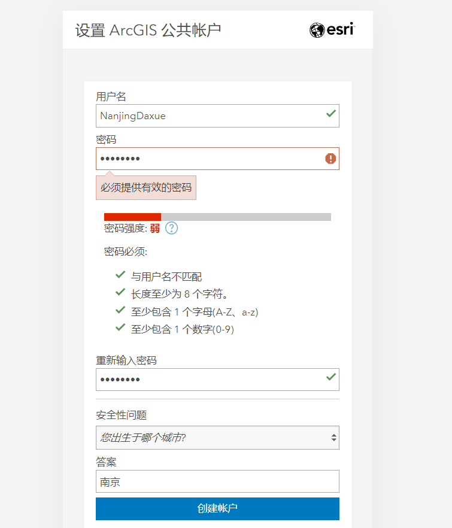
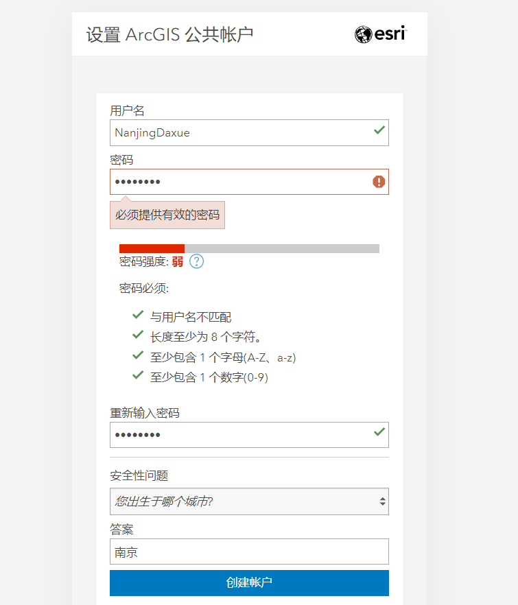
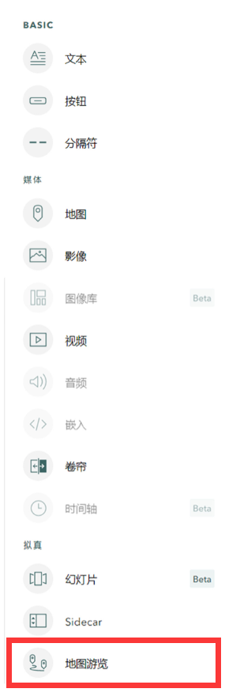

点击“登录”按钮，如果没有账号，继续点击“创建公共账户”，进入账号创建页面。创建时留的电子邮箱无法识别QQ邮箱，建议用学校邮箱或者其他邮箱，然后通过邮箱中收到的邮件链接点击创建网页。

通过邮箱收到的链接，进入创建用户名的页面，根据屏幕指引创建用户名和密码。最后点击“创建账户”按钮创建账户。
通过ArcGIS StoryMaps网站提供的功能，我们可以直接通过组合文本、添加地理位置，图文信息，创建发布属于自己的地图故事并且共享给所有人。
首先需要在ArcGIS StoryMaps 网站 注册一个账号并登录。
点击“登录”按钮，如果没有账号，继续点击“创建公共账户”，进入账号创建页面。创建时留的电子邮箱无法识别QQ邮箱，建议用学校邮箱或者其他邮箱，然后通过邮箱中收到的邮件链接点击创建网页。
通过邮箱收到的链接，进入创建用户名的页面，根据屏幕指引创建用户名和密码。最后点击“创建账户”按钮创建账户。
打开登录页面。网页上部是登录状态和账号管理。左侧上部是各种类型的故事创建方式，左侧下部有各种范例和教程。右侧是主要的地图故事编辑内容区域。点击“开始讲故事”进入地图故事编辑页面。
进入地图故事编辑页面，我们可以开始编辑, 首先在“为故事添加标题”位置添加标题，还可以在下一行添加副标题。添加好标题，点击“➕”“讲述您的故事”进入下一步。
可以看到出现很多的选项，如果感兴趣可以逐一尝试制作。我们将要尝试编辑地是最后的“地图游览”。进入创建游览页面， 点击“从头开始”。
页面会跳出可以选择布局，根据我们的内容设置，选取 “Explorer”布局。进一步选择布局中的“列表”模式，也可以尝试其他布局，点击完成。
此时，操作页面会变换成可编辑的地图状态。首先我们点击“地图选项”，可以进入一个调整背景地图的一些模式，选择不同底图的类型，或标注点的颜色等。
调整完地图样式，我们可以开始进行地图游览编辑。点击“无标题游览点”进入编辑区域。

点击“添加位置”，搜索“南京仙林”，鼠标滚轮放大缩小地图，按住鼠标左键可以平移地图。找到需要选取的地图点，点击左键，出现选择内容，点击“添加位置”，这样子位置就编辑好了。
进一步点击“添加图像或视频”，把准备好的照片拖拽进编辑框点击“确定”上传。
再进一步编辑标题和相关文字内容，编辑完成。点击下方“➕”，进入下一个游览点的编辑。
完成所有游览点的编辑后，在网页页面的最上段，点击“预览”，我们可以看到完成的页面在不同客户端口的呈现效果。
根据预览效果局部调整，调整完成后，点击“发布”可以选择“私有”即仅自我可见，或“所有人”即公开发布。

最终效果，点击最上方的链接按钮,生成特有的专属链接，可以将网页共享给他人直接阅读，会根据阅读的客户端（手机、笔记本、pad）自动调整页面。